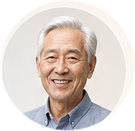

9:41
▮▮▮ ◉ ▰
优活
AI 安心助手
我的

语音优先
安心守护
优活已陪伴您
天
我的资料
个人信息与健康档案
还没有做好
紧急联系人
管理紧急联系人与呼救流程
还没有做好
用药提醒
管理用药计划与提醒
还没有做好
就医安排
预约记录与就诊计划
还没有做好
我的凭证
医保卡、就诊卡等电子凭证
还没有做好
设备与安全
设备管理与安全设置
还没有做好
字体与语音设置
字体大小与语音偏好
还没有做好
帮助与客服
常见问题与在线客服
还没有做好
紧急呼叫
立即呼叫
需要帮助？
您可以重新说一遍，或联系家人协助办理。
知道了
确认紧急呼叫
将联系已设置的紧急联系人，并记录本次呼叫。
立即联系
取消